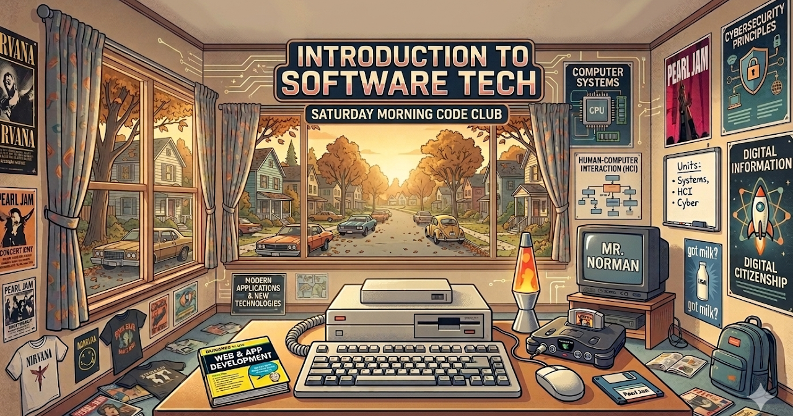

Intro to Software Technology
Digital citizenship and security, computing basics, and your first steps into programming and web design.
Units
Units 1, 2, & 4 are rebuilt here. Later units still open the original Google Site until they're migrated too.